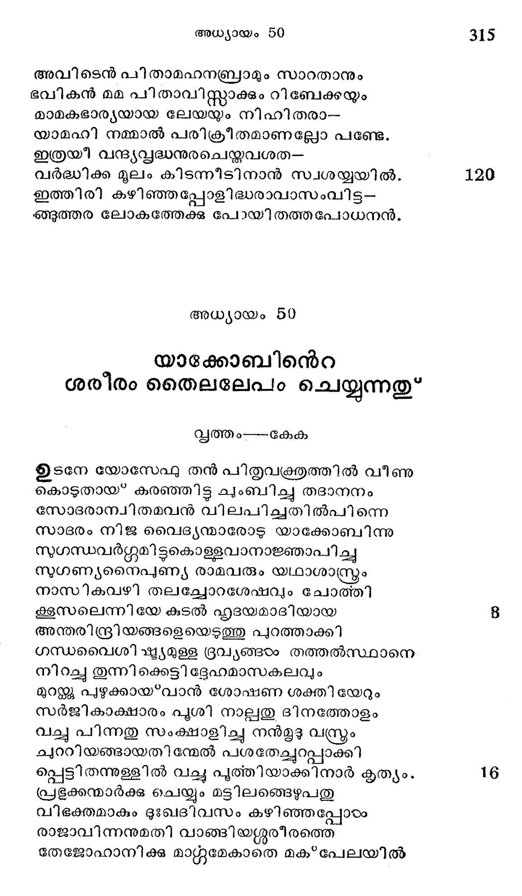
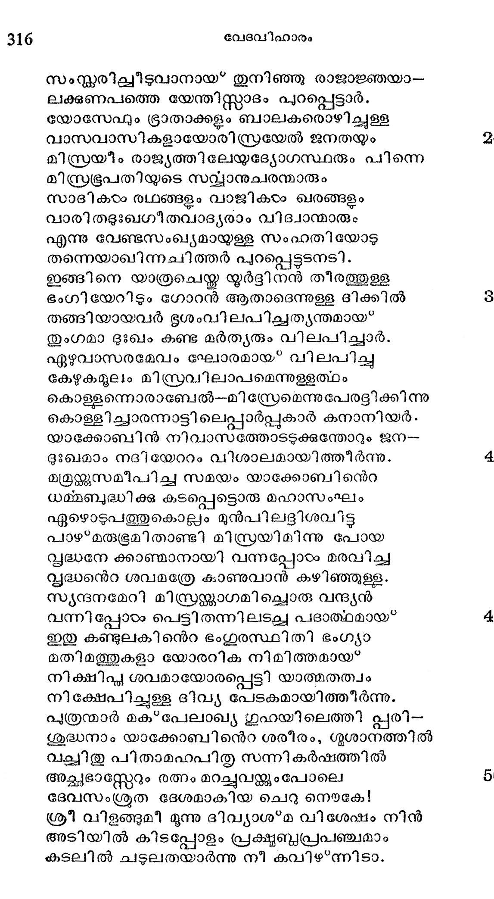
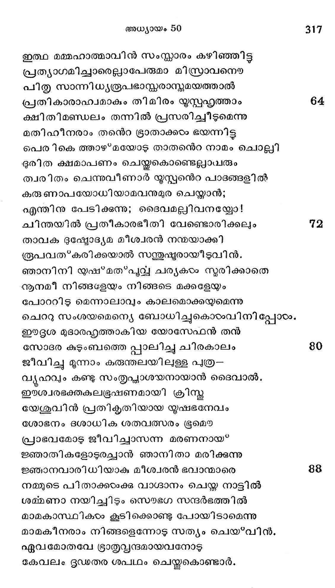
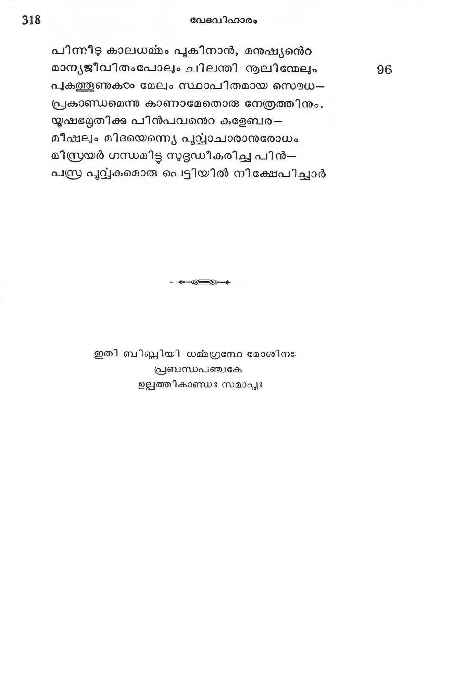

യാക്കോബിന്െറ ശരീരം തൈലലേപം ചെയ്യുന്നതു"
വൃത്തം---കേക
ഉടനേ യോസേഫു തന് പിതൃവക്രതുത്തില് വീണു
കൊടുതായ* കരഞ്ഞിട്ട ചുംബിച്ചു തദാനനം
സോദരാന്വിതമവന് വിലപിച്ചതില്പിന്നെ
സാദരം നിജ വൈദ്യന്മാരോടു യാക്കോബിന്നു
സുഗന്ധവര്ഗ്ഗുമി ട്ടുകൊള്ളവാനാജ്ഞാപിച്ചു
സുഗണ്യനൈപ്ണ്യ രാമവരും യഥാശാസ്ത്രരം
നാസികവഴി തലച്ചോറശേഷവും ചോത്തി
ള്ളസലെന്നിയേ കുടല് ഹൃദയമാദിയായ
അന്തരിന്ദ്രിയങ്ങളെയെടുത്തു പുറത്താക്കി
ഗന്ധവൈശി'ഷ്യമുള്ള ദ്രവ്യങ്ങംം തത്തല്സ്ഥാനെ
നിറച്ചു തുന്നിക്കെട്ടി ദ്ദേഹമാസകലവും
മുറ്റു പുഴുക്കായ*വാന് ശോഷണ ശക്തി യേറും
സര്ജികാക്ഷാരം പൂശി നാല്പതു ഭിനത്തോളം
വച്ചു പിന്നതു സംക്ഷാളിച്ചു നന്മൂടു വ്രും
ച്വററിയങ്ങായതിന്മേല് പശതേചല്ചുറപ്പാക്കി
പ്പെട്ടിതന്നുള്ളില് വച്ച പുത്തിയാക്കിനാര് കൃത്യം.
പ്രഭൂക്കന്മാര്ക്കു ചെയ്യും മട്ടിലങ്ങെഴുപതു
വിഭക്തമാകും ദുഃഖദിവസം കഴിഞ്ഞപ്പോഴം
രാജാവിന്നനുമതി വാങ്ങിയഗ്ശൂരീരത്തെ
തേജോഹാനിക്ക മാറ്ററുമേകാതെ മക*പേലയിൽ

സംസ്കരിച്ചീടുവാനായ* തുനിഞ്ഞു രാജാജ്ഞയാ--
ലക്ഷണപത്തെ യേന്തിസ്ത്ാദം പുറപ്പെട്ടാര്.
യോസേഫും ഭ്രാതാക്കളം ബാലകരൊഴിച്ചുളള
വാസവാസികളായോരിസ്രയേല് ജനതയും
മിസ്രയീം രാജ്യത്തിലേയദ്യോഗസ്ഥരും പിന്നെ
മിസ്രഭൂപതിയുടെ സവ്വാനുചരന്മാരും
സാദികടം രഥങ്ങളം വാജികടം ഖരങ്ങളം
വാരിതടുഃഖഗീതവാദ്ൃരാം വിദ്വാന്മാരും
എന്നു വേണ്ടസംഖ്യമായള്ള സംഹതിയോട
തന്നെയാഖിന്നചിത്തര് പുറപ്പെട്ടടനടി.
ഇങ്ങിനെ യാത്രചെയ്ത യൂര്ട്ദിനന് തീരത്തുള്ള
ഭംഗിയേറിടും ഗോറന് ആതാദടെന്നുള്ള ദിക്കിൽ
തങ്ങിയായവര് ഭൂശംവിലപിച്ചത്യന്തമായ*
തുംഗമാ ദുഃഖം കണ്ട മര്തൃരും വിലപിച്ചാര്.
ഏഴുവാസരമേവം ഘോരമായ വിലപിച്ചു
കേഴുകമൂലം മിസ്രവിലാപമെന്നുളളത്ഥം
കൊള്ളന്നൊരാബേല്--മിസ്രേമെന്നുപേരട്ിക്കിന്നു
കൊള്ളിച്ചാരന്നാട്ടിലെപ്പാര്പ്പുകാര് കനാനിയര്.-.
യാക്കോബിൻ നിവാസത്തോടടക്കുന്തോറും ജന-
ദുഃഖമാം നദിയേറാം വിശാലമായിത്തീര്ന്നു.
മ്രമഗ്ശുസമീപിച്ച സമയം യാക്കോബിനന്െറ
ധമ്മബുദ്ധിക്കു കടപ്പെട്ടൊരു മഹാസംഘം
ഏഴൊടുപത്തുകൊല്ലം മുന്പിലടദ്ദിശവിട്ട
പാഴ*മരുഭൂമിതാണ്ടി മിസ്രയിമിന്നു പോയ
സൃദ്ധനേ ക്കാഞ്മാനായി വന്നപ്പോടം മരവിച്ച
സ്ൃദ്ധന്െറ ശവമത്രേ കാണുവാന് കഴിഞ്ഞുള്ള.
സുന്ദനുമേറി മിസ്രയ്ക്കാഗമിച്ചൊരു വന്ദ്യന്
വന്നിപ്പോടം പെട്ടി തന്നിലടച്ച പദാത്ഥമായ*
ഇതു കണ്ടുലകിനന്െറ ഭംഗുരസ്ഥിതി ഭംഗ്യാ
മതിമത്തുകളാ യോരറിക നിമിത്തമായ*
നിക്ഷിപ്ല ശവമായോരപ്പെട്ടി യാത്മതത്വം
നി അപു ദിവ്യ പേടകമായിത്തിീര്ന്നു.
പുത്രന്മാര് മക*പേലാഖ്യ ഗുഹയിലെത്തി പ്പരി-
ശുദ്ധനാം യാക്കോബിനന്െറ ശരീരം, ഗൃശാനത്തില്
വലചിതു പിതാമഹപിതൃു സന്നികര്ഷത്തില്
അച്ഛഭാസ്ററേറും രത്നം മറച്ചുവന്ക്കും പോലെ
ദേവസംശ്രത ദേശമാകിയ ചെറു നൌകേ!
ശ്രീ വിളങ്ങുമീ മൂന്നു ദിവ്യാശ*മ വിശേഷം നിന്
അടിയില് കിടപ്പോളം പ്രക്ഷ്ടബ്ദപ്രപഞ്ചമാം
കടലില് ചടുലതയാര്ന്നു നീ കവിഴ*ന്നിടാ.

ഇത്ഥ മമ്മഹാത്മാവിന് സംസ്കാരം കഴിഞ്ഞിട്ട
പ്രത്യാഗമിച്ചാരെല്ലാപേരുമാ മിസ്രാവനൌ
പിതൃ സാന്നിധ്യരൂപഭാസ്തരാസ്മമയത്താല്
പ്രതികാരാഹ്വമാകും തിമിരം യൂസ്പഹൃത്താം
ക്ഷിതിമണ്ഡലം തന്നില് പ്രസരിച്ചീടുമെന്നു
മതിഹീനരാം തന്െറ ഭ്രാതാക്കരം ഭയന്നിട്ട
പെരികെത്താഴമയോട് താതനന്െറ നാമം ചൊല്ലി
ദുരിത ക്ഷമാപണം ചെയ്തുകൊണ്ടെല്ലാവരും
ത്വരിതം ചെന്നുവീണാര് യൂസ്പനന്െറ പാദങ്ങളില്
കരു ണാപയോധിയാമവനുമുര ചെയ്താന്;
എന്തിനു പേടിക്കുന്നു; ദൈവമല്ലിവനയ്യോ!
ചിന്തയില് പ്രതീകാരഭീതി വേണ്ടൊരിക്കലും
താവക ദുഷ്ടോദ്യമ മീശ്വരന് നന്മയാക്കി
രൂപവത*കരിക്കയാല് സത്തുഷ്ടയരായീടുവിന്.
ഞാനിനി യുഷ*മത*പുവ്വയ ചര്യകഠം നൂരിക്കാതെ
നൂനമീ നിങ്ങളേയും നിങ്ങടെ മക്കളേയും
പോററിട മെന്നാലാവും കാലമൊക്കയുമെന്നു
ചെററു സംശയമെന്യെ ബോധിച്ചുകൊടംവിനി പ്പോടം.
ഈദ്ദശ മുദാരഹൃത്താകിയ യോസേഫന് തന്
സോദര കുടുംബത്തെ പ്പാലിച്ചു ചിരകാലം
ജീവിച്ചു മൂന്നാം കരുന്തലയിലുള്ള പുത്ര--
വൃഹവും കണ്ടു സംത്ൃപ്ഛധാശയനായാന് ടദൈവാല്,.
ഈശ്വരഭക്തകലഭൂഷണമായി ക്രിസ്തു
യേശുവിന് പ്രതിക്ൃതിയായ യൂുഷഭനേവം
ശോഭനം ഭശാധിക ശതവത്സരം ഭൂമൌ
പ്രാഭവമോട ജീവിച്ചാസന്ന മരണനായ്*
ജ്ഞാതികളോടുരച്ചാന് ഞാനിതാ മരിക്കുന്നു
ജ്ഞാനവാരിധിയാക മീശ്വരന് ഭവാന്മാരെ
നമമുടെ പിതാക്കഠംക്കു വാഗ്ദാനം ചെയ്ത നാട്ടില്
ശമ്മണാ നയിച്ചിടും സൌഭഗ സന്ദര്ഭത്തില്
മാമകാസ്ഥികടം കൂടി ക്കൊണ്ടു പോയിടാമെന്നു
മാമകീനരാം നിങ്ങളെന്നോട് സത്യം ചെയ*വിന്.
ഏവമോതവേ ഭ്രാതൃവ്പന്ദമായവനോട
കേവലം ദൂഡതര ശപഥം ചെയ്തകൊണ്ടാര്.

പിന്നീട കാലധമ്മം പുകിനാന്, മനുഷ്യന്െറ
മാന്യജീവിതംപോലുംം ചിലന്തി നൂലിന്മേലം
പുകത്തൂണുകടം മേലും സ്ഥാപിതമായ സൌധ.-
പ്രകാണ്ഡമെന്നു കാണാമേതൊരു നേത്രത്തിനും.
യൂഷഭമൃതിക്കു പിന്പവനെറ കളേബര-
മീഷലും മിദയെന്നെയ പുവ്വാചാരാനുരോധം
മിസ്രയര് ഗന്ധമിട്ട സുദ്ദഡീകരിച്ച പിന്--
പ്ര പുവ്വകമൊരു പെട്ടിയില് നിക്ഷേപിച്ചാര്
---------------------------------------------------------
ഇതി ബിബ്ലിയി ധമ്മഗ്രമ്പേ മോശിനഃ
പ്രബന്ധപഞ്ചകേ
ഉല്പത്തികാണ്ഡഃ സമാപ്ൂഃ
